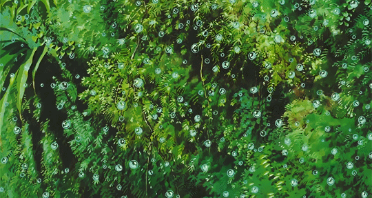
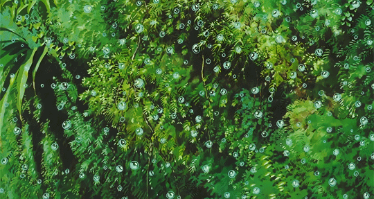
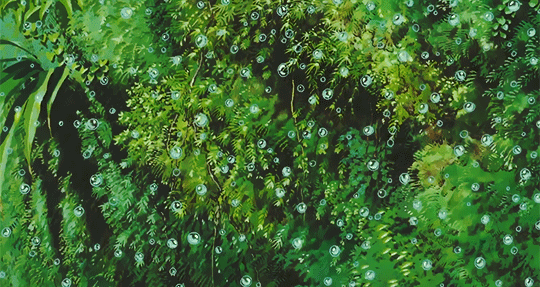
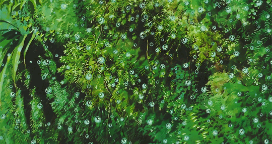

_コハラタケルさん (@takerukohara) _ Twitter.jpg)


 _ Twitter.png)


![hellothisisangle [เหลี่ยม] on Twitter](images/atulvinayak/Sys1/407083253826273079_hellothisisangle [เหลี่ยม] on Twitter.jpg)


 



 Phone Wallpaper _ Moviemania.jpg)


 
